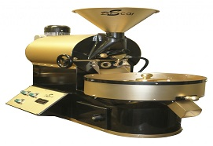
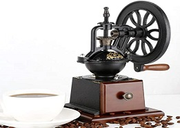
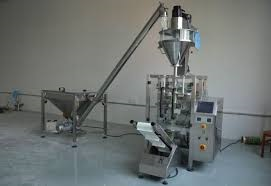

Tostador de café
Richard Evans patentó la primera tostadora de café a gran escala en el Reino Unido en 1824. Según The Curious Barista’s Guide to Coffee, daba la posibilidad a los usuarios de colocar todo el cilindro boca arriba para vaciarlo y también contaba con un “examinador”, que permitía extraer muestras durante el tueste.
Molinillo para café
La llegada del café a Europa en el siglo XVI implicó la creación de un objeto específico, el «molinillo de café», el cual permitía moler este grano conservando al máximo sus aromas. ... Los primeros molinos verdaderos aparecieron en Europa y en Turquía al mismo tiempo en el siglo XVII.
Empacadora de café
Fabrica equipos de envasado y soluciones de embalaje integradas, son ideales para cualquier tipo de producto (polvos, trozos, gránulos), están disponibles en las versiones de vacío y / o atmósfera modificada y pueden producir hasta 150 piezas por minuto.